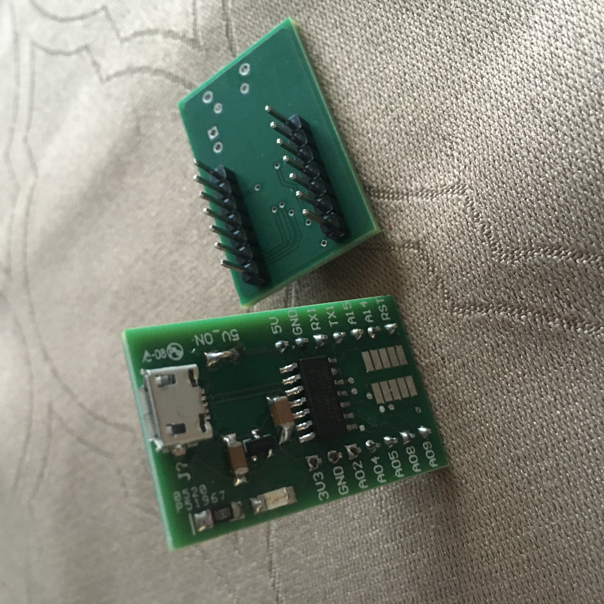
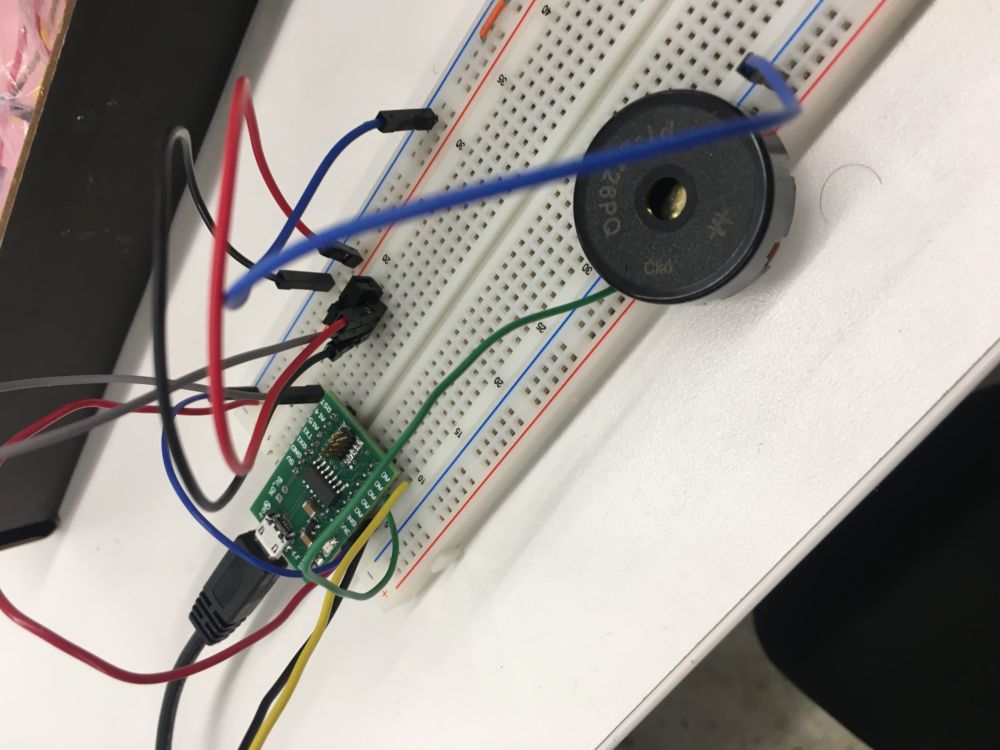

Capacitive Sensing
I decided to use the capacitors as a creator of random noise. The project outcome was very entertaining and I was able to study the distances that created different noises. There is a switch to allow it to be turned on and off.
You will need:

- a tone generator. Here I use the vertical strips of the breadboard since it is easier to plug in the tone and make sure the pins are not on the same strip.

- two copper sheets on paper attached to respectice wire.
- and a switch.
I am using Rob's microcontroller. This controller worked better than the Adafruit one, and did not require me to download the driver for Metro (which I was having difficulty with) for capactive touch). I did have to install the MattairTech board pack for Arduino and select the Generic D11C14A board.

Here it is all put together.

The code used:
//tx_rx03 Robert Hart Mar 2019.
// Program to use transmit-receive across space between two conductors.
// One conductor attached to digital pin, another to analog pin.
//
// This program has a function "tx_rx() which returns the value in a long integer.
//
// Optionally, two resistors (1 MOhm or greater) can be placed between 5V and GND, with
// the signal connected between them so that the steady-state voltage is 2.5 Volts.
//
// Signal varies with electric field coupling between conductors, and can
// be used to measure many things related to position, overlap, and intervening material
// between the two conductors.
//
long result; //variable for the result of the tx_rx measurement.
int analog_pin = 2;
int tx_pin = 9;
int switch_pin = 13;
int tone_pin= 5;
void setup() {
pinMode(tx_pin, OUTPUT); //Pin 4 provides the voltage step
pinMode(switch_pin, INPUT);
Serial.begin(9600);
}
long tx_rx(){ //Function to execute rx_tx algorithm and return a value
//that depends on coupling of two electrodes.
//Value returned is a long integer.
int read_high;
int read_low;
int diff;
long int sum;
int N_samples = 200; //Number of samples to take. Larger number slows it down, but reduces scatter.
int t=0; //to be used to signal off
sum = 0;
for (int i = 0; i < N_samples; i++){
digitalWrite(tx_pin,HIGH); //Step the voltage high on conductor 1.
read_high = analogRead(analog_pin); //Measure response of conductor 2.
delayMicroseconds(100); //Delay to reach steady state.
digitalWrite(tx_pin,LOW); //Step the voltage to zero on conductor 1.
read_low = analogRead(analog_pin); //Measure response of conductor 2.
diff = read_high - read_low; //desired answer is the difference between high and low.
sum += diff; //Sums up N_samples of these measurements.
}
return sum;
}
//End of tx_rx function.
void loop() {
//switch on
if (digitalRead(switch_pin) == HIGH){
int pitch1 = result/800;
tone(tone_pin, pitch1);
}
//switch off
}